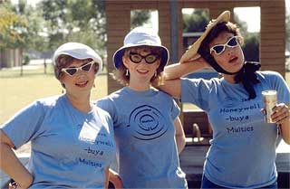
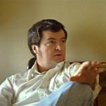

Loading

Their shirts read Save Honeywell, Buy a Multics on the front, and Save Multics, Buy Honeywell on the back.','mulimg/cuties-big-2x.jpg')">Sue Bender, the late Liz Mullen, and Kay Kaiser: Multics Picnic, Phoenix, 1978
Their shirts read Save Honeywell, Buy a Multics on the front, and Save Multics, Buy Honeywell on the back. (Click for a larger view.)
By the spring of 1978, Honeywell had sold only about 25 Multics sites -- each of these was a multi-million dollar sale, but Honeywell wasn't making as much money from the system as they wanted. The Multics developers felt that the path to more sales was expansion of the system, more features, more aggressive marketing, bigger development budgets. Most of Honeywell's business came from GCOS machines; this system was older technology, supported by a software group ten times our size, and having its own problems competing with OS/360. They had a future plan, for a new system called GCOS 66, that was just beginning. Honeywell also sold the CP-6 system, inherited from Xerox: the CP-6 group was small, about the size of the Multics group, based in LA. They too felt under-marketed and resource starved.
Factions favoring each operating system developed in marketing.
The Multics believers took their case to Honeywell corporate, which decided to put the issue to rest once and for all
by hiring a blue-ribbon consultant from outside the company.
The consultant chosen was Palyn Associates (later known as the Palyn Gould Group, now defunct),
founded by Max Paley and Prof. Mike Flynn of Stanford.
(Famous guys. The late Max Paley was the project leader of the  ACS project at IBM's Menlo park lab in the mid-60s.
Mike Flynn was the CPU design manager of the IBM 7090, 7094 II, and 360 Model 91.)
Palyn assembled a team of well-known computer scientists,
including the late Gerry Popek,
Mike Stonebraker, George Rossman,
Forrest Baskett, John Hennessy, and others,
who studied all four systems and interviewed lots of people inside Honeywell and out,
and then gave the Palyn Report to corporate.
(Stan Vestal was a Honeywell employee who helped write the GCOS 66-CP6 comparison section.)
ACS project at IBM's Menlo park lab in the mid-60s.
Mike Flynn was the CPU design manager of the IBM 7090, 7094 II, and 360 Model 91.)
Palyn assembled a team of well-known computer scientists,
including the late Gerry Popek,
Mike Stonebraker, George Rossman,
Forrest Baskett, John Hennessy, and others,
who studied all four systems and interviewed lots of people inside Honeywell and out,
and then gave the Palyn Report to corporate.
(Stan Vestal was a Honeywell employee who helped write the GCOS 66-CP6 comparison section.)
The Palyn Report said that Honeywell didn't have the resources to make all four operating systems competitive. It recommended that Honeywell halt development on GCOS, GCOS 66, and CP-6 and look to Multics as its future flagship system.
Corporate asked the Large Information Systems Division to look at the report and respond. You can imagine that this was a political hot potato. Many engineering careers were at stake; people who had assured corporate that GCOS was a good idea now had to explain why the consultant didn't agree. LISD management, led by Ed Vance, kept the report a big secret, didn't tell anyone in Engineering what was in it, and assembled a committee of Phonenix engineers to write a response to the report. The committee was

- Al Longanecker (GCOS)
- Bill Frink (GCOS)
- Dale Shipley (GCOS)
- Irwin Greenwald (CP-6)
- Tom Van Vleck (Multics)
The report was kept under lock and key at all times. Our committee was to meet continuously, off site in Phoenix motel rooms, until it completed its evaluation. We started in November 1978.
We met, and revisited all the issues, and discussed places where the consultants might have been mistaken, and hashed over the same arguments that had divided Honeywell for years, one more time. Our report finally said that Palyn was right: Honeywell couldn't do four systems, and Multics was the best chance for survival in the 80s. We did suggest different action, migrating the GCOS users into an enhanced Multics, instead of killing off the whole GCOS effort. We called this strategy "GCOS assimilation." I remember we presented this recommendation to LISD management, and then to Phoenix developers in a mall auditorium somewhere, and later to Honeywell top management at the Camelback Inn.
LISD management may not have liked our response, but they couldn't just ignore our evaluation. They set up five more committees to look further into GCOS assimilation and additional side issues. I was on a couple of those. They wanted cost estimates for GCOS assimilation, and when they got some, they didn't want to spend the money and wait the time necessary. Unifying GCOS and Multics would require substantial expense and risk, and they finally decided not to try: Honeywell continued with GCOS, GCOS 66 (renamed GCOS 8), CP-6 and Multics as before, starving all four of resources, sticking to the pre-Palyn plan. We know how that came out: Honeywell's out of the computer business.
Charlie Clingen, CISL, 1979
(Imagine the list of people who saved Multics for one more year. Corby is on it many times, and so is Charlie Clingen, and Lick, and Ed Fredkin (story), and a lot of other people I admire. (All are gone now.)
I like to think I'm on the list once, for the work I did in those Phoenix motel rooms, selling Multics. I succeeded because I had smart and open-minded colleagues on the committee, because I was trained in discussion and reasoning by my fellow Multicians, and because Multics really was the best choice. This was a contest we couldn't win, but we could have lost. If the committee had produced anything less than a resounding endorsement of Multics, I think LISD would have terminated the product right then at the end of 1978.)
The late Irwin Greenwald wrote (09/08/2004):
It was always my opinion that Frink, Shipley, and Longanecker told management what they believed management wanted to hear.
They didn't believe that GCOS could be encapsulated in Multics, that the GCOS file systems and databases could be moved or that the customer base could be preserved.
But because management had hired Palyn, the committee had to go along with what they said.
I don't know whether they were astute enough to realize that management would not take on the risk and therefore felt free to issue a defective report.
Personally, I never believed it would work, but since the end report said to leave CP-6 alone, I didn't object.
John Gintell wrote (09/06/2019):
Honeywell, as did other major computer manufacturers, attempted to be the primary supplier of a full range of equipment to their big customers. Multics played a role in this with customers such as GM and Ford who viewed Multics as an important system to them, even if they only had one.
I remember in ~1979/80 the following incident. I got a call from Charlie early in the morning of HLSUA. He had learned that Honeywell management were planning to announce the capping of Multics. So I called a CISL meeting and told everyone about this before the story spread.
Several hours later I got another call from Charlie. It turns out that Honeywell management had a meeting with several customers, including Ford and GM, to tell them about this plan before a general announcement, and the customers had talked Honeywell out of their plans, saying how important Multics was to them and that such a decision would impact future purchases. And the capping plan was thwarted and no announcement was made at HLSUA.
Not too much later Jim Renier, Honeywell President, as part of trip to Boston, came to CISL to reinforce the commitment to Multics.
5/27/93, updated 11/08/94, 08/09/2004, 09/08/2019